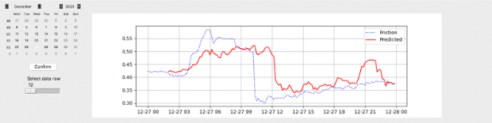
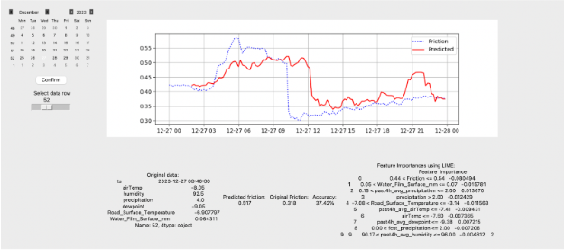

How it works?
Meta’s Prophet and NeuralProphet
6. Then XGBoost regressor model is trained and optimized with Optuna framework
7. Predictions are made on completely unseen data (Training happened on the data from 2021-2022 winter season, while predictions, or in other words testing, happens on 2023-2024 dataset). Then, predictions are shifted two hours forward in order to compare them to original friction values. For example, we take data from 07:00 and predict friction at 09:00, then we compare forecast to original friction value at 09:00.
How it works?
8. Everything is being demonstrated interactively in Tkinter GUI
Calendar to pick the date from
Then, the plot is made for the specific day

And finally, for each timestamp of the day there are a original data, friction forecast and original friction comparison,
accuracy and LIME analysis of the feature importances displayed
